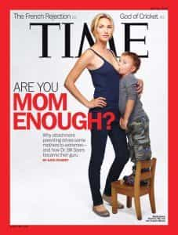

Saying that the MSM is biased is about like saying that water is wet. Time Magazine is a repeat offender, constantly insulting the public with their propaganda.
Meltdown
Hillary still lost, so suck it!
The symbolism on the 8/22/2016 cover was glaringly obvious, but for a fuller explanation, we have:
…Trump has continued to inflame audiences with controversial remarks this week — first, with his Second Amendment comment about his Democratic opponent Hillary Clinton… and more recently, calling President Barack Obama the “founder of ISIS…
The illustration is simple and succinct, capturing the billionaire’s face oozing down like a lit candle, with the spare cover line: “Meltdown.”
It was created by Edel Rodriguez, a Cuban-born artist known for taking on tough topics such as gun control, racial relations in the U.S. and gender equality.
Golly jeepers, I’m quite certain that Time chose this picture because of its measured ideological balance, right?
Their 10/13/2016 cover was quite similar, “Total Meltdown”, showing The Donald reduced to a waxy puddle. This issue appeared shortly after the shocking revelation that he said “pussy” eleven years previously. However, their triumphant crowing was rather premature.
Better propaganda:
Now who’s having a meltdown?
Yo Decido
The 3/5/2012 cover, subtitled “Why Latinos will pick the next President”, was rather controversial. One of the twenty people pictured isn’t Hispanic: the guy in the center of the top row (under the “M”) is Eurasian. As he tells it, the photographers never explained what the pictures were going to be used for. That’s not exactly a great way to avoid misunderstandings.
At least it wasn’t as big a racial gaffe as eighteen years prior, when they digitally darkened OJ Simpson’s mugshot on their cover. That made for quite a contrast at the news stands, since Newsweek ran the unaltered version.
Hey, Time editors: “Yo mama!”
Anyway, “Yo decido”—the first Spanish title of theirs—seems rather sketchy. It kind of suggests that Latino voters don’t know English. (Imagine how a different cover would go over: “Wir wählen: Midwestern German-Americans might decide Romney’s election”.) Many are immigrants, but anyone eligible to vote passed a citizenship test which includes English proficiency. Given the contemporary nit-picky political climate, it’s surprising that SJWs didn’t have a meltdown about that.
On the other side of the coin, what’s truly irritating is their blatant celebration of the leftist endgame strategy. Time’s cover practically gloated about what their mass immigration policies have been doing. The Democratic Party has pushed population replacement policies ever since Ted Kennedy’s 1965 immigration act. Since the influx of cheap labor drives wages down, they sold out blue collar workers, their former major power base.
The real reason was to import tens of millions who would bloc-vote for Democrats. Basically, mass immigration amounts to stuffing the ballot box. (That’s exactly what politicians are doing in Europe too.) The Republicans have tried to horn in on the action—for example, consider Bush the Younger’s silly campaign speeches in Spanish. Courting votes from what Republicans called “natural conservatives” failed completely.
Some leftist talking heads have crowed about the double bind they’ve forced on the Republicans: either they continue enabling mass immigration (giving Democrats even more bloc voters) or curtail it and alienate Hispanics (not that they’ll switch parties anyway). If America’s founding population—what the Constitution’s preamble calls “our posterity”—falls below 50%, then electing candidates who will halt the demographic decline would become impossible. Further, Whites would lose control over the destiny of the country their forefathers built. Many leftists practically giggle like little girls about that one.
Better propaganda:
I’m sure MS13 is full of “natural conservatives”.
Are You Mom Enough?
The topic is attachment parenting. More traditional styles include “free range” parenting (everything up through the 1980s) and “helicopter parenting” (shaping the millennial generation). In this case, attachment parenting could be called “Apache attack helicopter parenting” or “Brazilian jiu-jitsu parenting”.

It’s hard to make breastfeeding cringe-worthy…
So the big deal is that it showed the model standing with a rather defiant-looking pose while nursing her child. The kid happened to be nearly four years old at the time and was standing on a step-stool. It seems a little odd to put such a photo on the cover of Time. After all, periodicals showing titty on the front cover are usually sold in “24 hour news stands“, or sometimes behind the counters of gas stations in opaque plastic.
Nursing babies is natural, healthy, and quite tender (usually); that’s what sweater puppies are made for, right? However, that’s not quite the image conveyed by the photographers, who deliberately selected that pose. (Not pictured was her other kid, an adopted Ethiopian boy a year older who also got nursing privileges.) Anyway, I’m rather skeptical about it being a good idea to keep kids on the tit when they’re old enough to remember… paging Doctor Freud!
Attachment parenting is rather controversial. The mother indeed has strong convictions, such as doing volunteer work to assist Syrian refugees. However, again it was Time’s staff being aggressive about promoting the message. The title itself—“Are you mom enough?”—is equally as provocative as showing bare boobage on the cover of a MSM periodical. It’s insulting to imply that mothers not into Brazilian jiu-jitsu parenting are second-rate.
Anyway, surely it’ll make quite the conversation piece for when the kid is old enough to bring a girlfriend home: “Look at this! Your new boyfriend was on the cover of Time.”
Better propaganda:
How’s this oldie for propaganda? Best of all, it shows nursing done the right way.
The New Face of America
On November 18, 1993, Christmas came early for the globalists. Using a morphed image, Time’s “special issue” depicted what they believe future humanity should be, after the multicultural pressure cooker extinguishes genetic uniqueness. The picture doesn’t look White, Black, Hispanic, Asian, American Indian… it’s nothing at all. If that wasn’t enough, it’s unclear if the image depicts a soft butch woman or an effeminate man. This is what they think the future should be.
Leftists say races don’t exist, but they’re sure in a hurry to destroy every last one of them.
This issue is full of articles praising mass immigration and multiculturalism; for instance:
Intermarried…with Children
For all the talk of cultural separatism, the races that make up the U.S. are now crossbreeding at unprecedented rates.
Miami: the Capital of Latin America
A city that was once a languid resort town is now a pulsating center of international trade and pop culture
The Global Village Finally Arrives
The New World Order is a version of the New World writ large: a wide-open frontier of polyglot terms and post national trends
Could they possibly be any more blatant about their rotten agenda? This is what globalists have always wanted, be they flaming Communists like Leon Trotsky, ultra-wealthy shmucks like Richard Coudenhove-Kalergi (and the banksters who backed him), sickos in academia, or Eurocrats in Brussels.
As one very underappreciated former British MP put it way back in 1963:
They talked of what they called “multiracialism”, which was simply a universal mix-up: Take humanity, put it in a bag, shake it together, and heaven knows what would come out. They wanted to get rid of what existed, all the little grey people of the world who hate the beautiful diversity of human development. They always want to get rid of the natural, the noble and the beautiful. They wanted to get rid of it; they wanted to make all nature as grey as themselves. It was their deep instinct.
We were always opposed to that. We said, “No, it won’t work, and it’s undesirable that it should work!” We can live in peace and friendship, side by side, in separate nations and separate developments; but we cannot have the mix-up of peoples and races who are widely different and divergent. It will lead to nothing but trouble!
This policy of mixture, what does it really mean? It doesn’t mean “freedom”, it doesn’t mean “brotherhood”, or any of the cant and humbug which is taught. That is just a mask for some of the finest forces on earth to exploit the peoples in the future as they have done in the past…
Want to stick it to the globalists? Date your own people exclusively, have children who look like you, teach them about their heritage, and warn them about cultural Marxism and the lying media.
Better propaganda:
Leftists call images like this “hate”. They claim to support diversity, but really want to destroy the world’s diversity.
My books are available at Smashwords and Amazon.
Read More: How Mainstream TV Uses Emotional Triggers To Sway Political Opinion